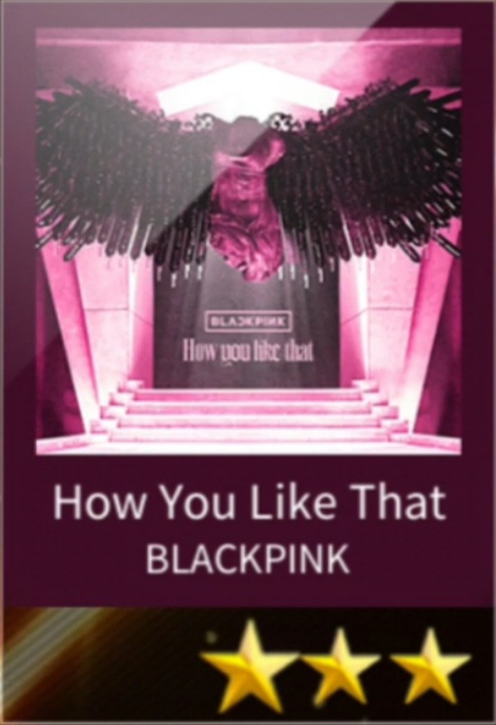
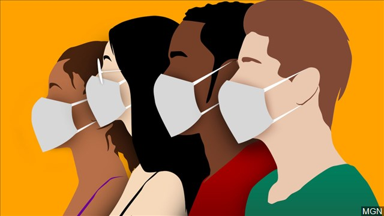

HOME
EDUCATION
SKILLS
COVID19
GALLERY
ABOUT
SHORTCUT GAME VIDEO
aespa - Black Mamba

BLACKPINK - How You Like That
BLACKPINK - Kill This Love
COVID19
Tips to avoid Covid19
"together, we can stop the pandemic" - "follow the new normal"
Tips #1 - Wash Your Hand
Picture
Description
1. Wash your hand after going out.
2. Wet your hand with clean running water.
3. Use hand soap when washing your hand.
4. Spread the soap evenly all over your hand, fingertips, fingernails, and wrists.
5. Rinse your hand to wash away the soap with clean running water.
6. Use clean towel to dry your hand.
Tips #2 - Use Hand Sanitizer
Picture
Description
1. Prepare hand sanitizer as precautions.
2. Use hand sanitizer before entering places.
3. Use hand sanitizer after entering places.
4. Use hand sanitizer even when you did not touch anything.
5. Hand sanitizer need to contain at least 60% alcohol.
Tips #3 - Wear Face Mask
Picture
Description

1. Wear mask when going out.
2. Use N95 mask or Surgical Mask for better protection.
3. Face mask need to have at least have two layer.
4. Dispose face mask that been used for a long time.
5. Use right size of face mask, children or adult.
Tips #4 - Avoid Crowded Place
Picture
Description
1. It is okay to go out for a while.
2. Avoid going to crowded places.
3. Crowded place have high risk of being infected.
4. Come early to avoid crowded places.
5. plan before going out.
Tips #5 - Pratice Social Distancing
Picture
Description
1. Keep distance when meeting with people.
2. Avoid contact with the people you meet.
3. Use hand sign or movement to say hello.
4. Keep at least 1 meter distance with people you meet.